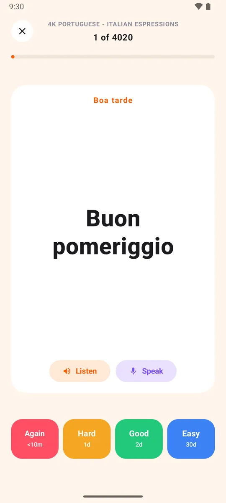

The forgetting curve
Memory fades fast after learning. Each review slows it down.
Guide
Review each card right before you would forget it, a little later each time. Ten minutes a day is enough.
Free. No ads. Open source.

Memory fades fast after learning. Each review slows it down.
Short sessions over many days beat one long cram.
Recalling an answer strengthens it more than rereading it.
Grade yourself after each card. Every button shows exactly when the card comes back.
| Button | Next review | You can set it |
|---|---|---|
| Again | Under 10 minutes | No |
| Hard | 1 day | 1 to 365 days |
| Good | 3 days | 1 to 365 days |
| Easy | 7 days | 1 to 365 days |

Good cards are small and specific.

Start with 10 to 20 new cards and all your due reviews. Loopky's default goal is 20 new cards.
Yes. Research on spacing and testing shows recall at spaced intervals beats rereading and cramming.
Fixed intervals per button: under 10 minutes, then 1, 3 and 7 days by default, each adjustable up to 365.
A few minutes a day is enough.